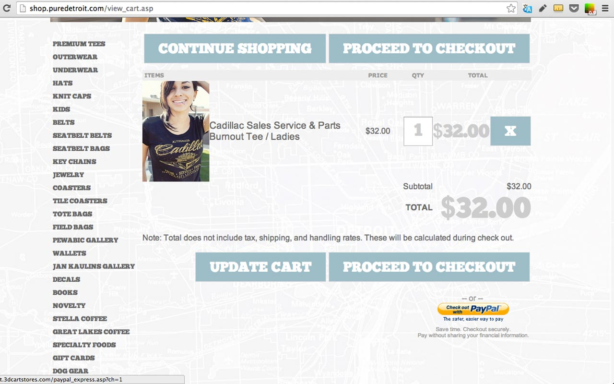
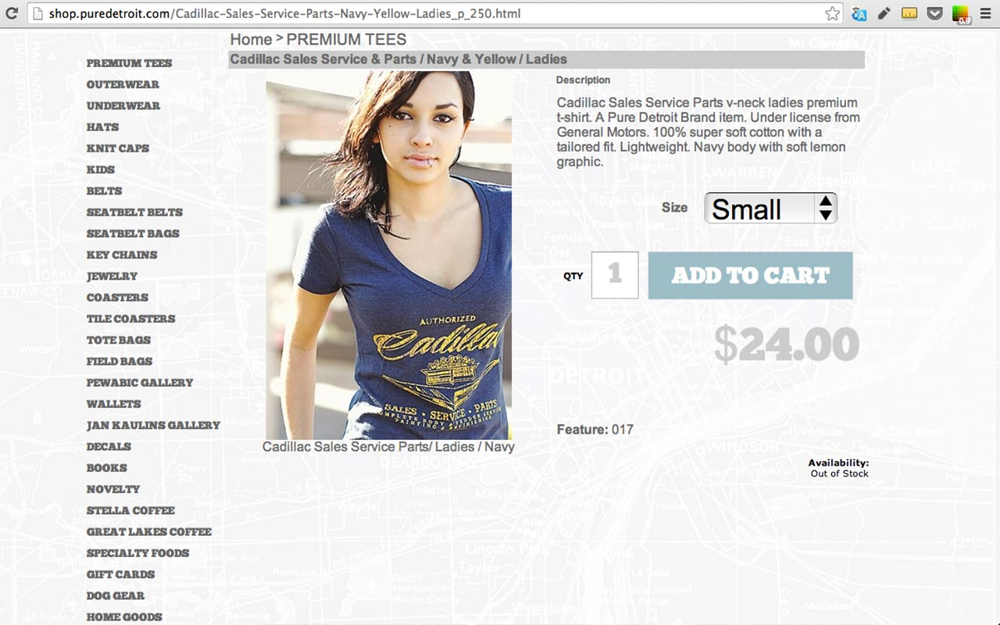
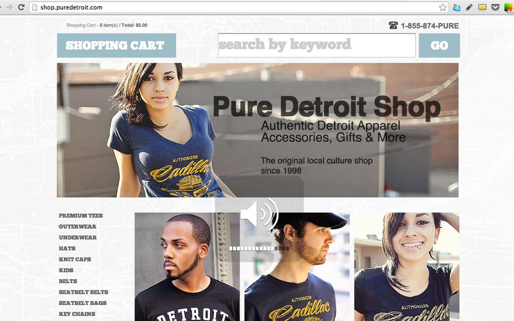

<div class="w-arrows">
    <div class="btn-prev"></div>
    <div class="close"></div>
    <div class="btn-next"></div>
</div>

<div class="img-project">
    <div class="nav-wrapper">
    	<div class="nav-work">
        	<div class="w-prev"></div>
    		<div class="w-next"></div>
        </div>
        <div class="wrapper-project">
            <ul>
                <li></li>
                <li></li>
                <li></li>
            </ul>
        </div>
        <div class="controller-3">
            <ul>
            </ul>
        </div>
	</div>
    <div class="clear"></div>
    <div class="info-project">
        <div class="tag-project">Website</div>
        <div class="title-project">Pure Detroit</div>
        <div class="spacer"></div>
        <div class="description">Pure Detroit is building more than a brand. They are creating a culture. Which is no small task in one of America's richest cultural cities.<br> <a href="http://puredetroit.com">http://puredetroit.com</a></div>
    </div>
</div>
<div class="clear"></div>
<div class="w-arrows last">
    <div class="btn-prev"></div>
    <div class="close"></div>
    <div class="btn-next"></div>
</div>